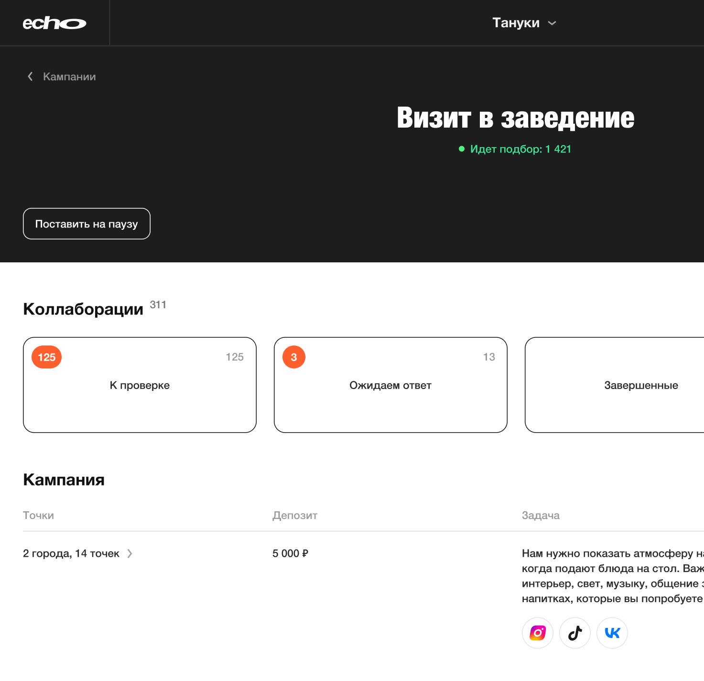
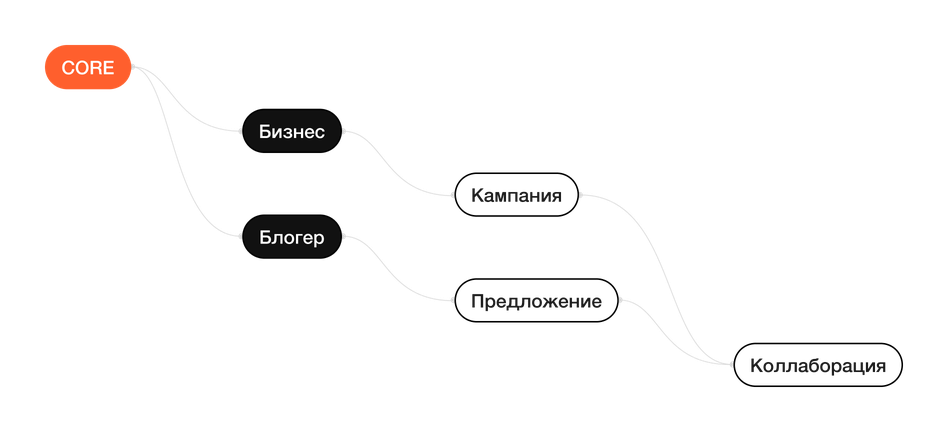
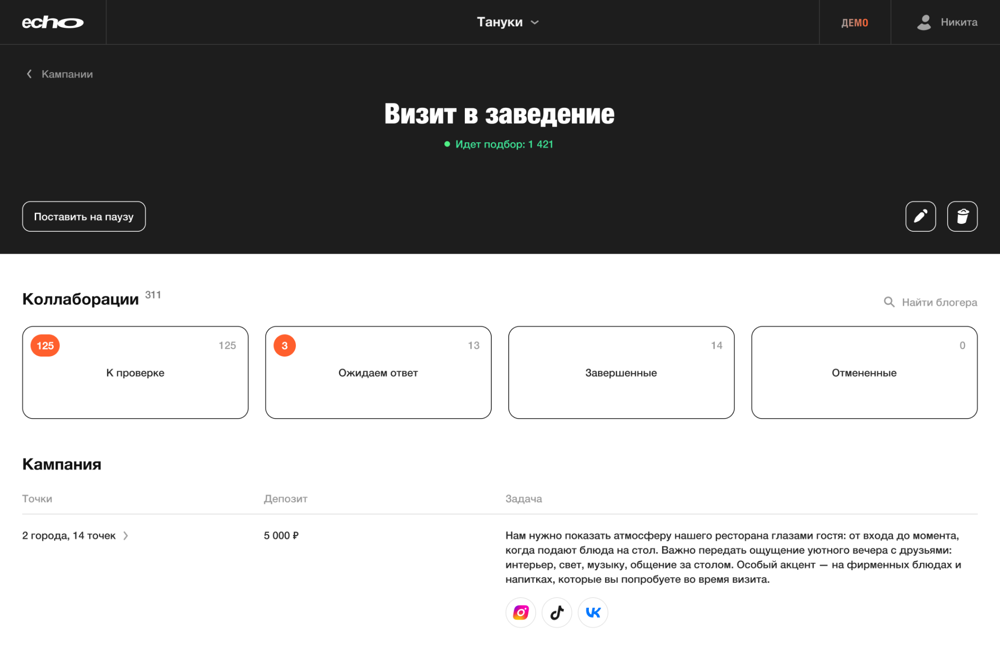
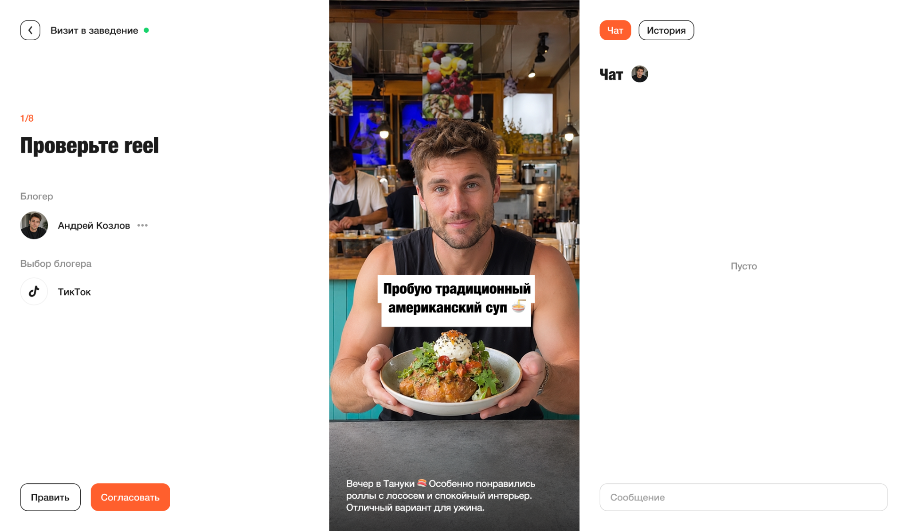

Спроектировал MVP платформы для бизнеса и блогеров
Статус
Макеты переданы клиенту для поиска инвестора
Год
2026
Презентация кейса на 2 мин.

Статус
Макеты переданы клиенту для поиска инвестора
Год
2026
Презентация кейса на 2 мин.

Задача
Именно с таким запросом пришёл клиент. Первым делом я спросил: зачем этот проект вообще существует?
Клиент видел, что Rippla приносит деньги за рубежом, и хотел проверить, сработает ли та же модель в России.
Клиент готовил продукт к поиску инвестиций. Ему нужен был не разработанный сервис, а достаточно проработанный дизайн MVP, на котором можно показать, как работает бизнес-модель и пройти основные сценарии с потенциальными пользователями.
На старте у клиента уже были контакты ресторанов, готовых посмотреть продукт. Поэтому задача была не просто нарисовать интерфейсы, а собрать целостный механизм, который можно показать бизнесу и использовать как основу для дальнейшего привлечения инвестиций.
Discovery
Я быстро понял: готовых требований нет. Есть чужой продукт и пожелание его повторить.
По сути, Rippla работает как фриланс-биржа для блогеров: бизнес размещает задачу, а блогер выполняет её, создавая нужный контент — например, пост или Reels.
Сам выбор референса выглядел странно: на российском рынке уже были свои сервисы, но клиент принёс зарубежный. Я решил проверить, нужен ли вообще ещё один продукт или дубликат Rippla станет ошибкой.
На старте я изучил SHAR, Blogerito и Barter.do; позже к сравнению добавился goesti. Архитектура сервисов сильно отличалась.
Я предложил клиенту не копировать Rippla, а сначала вместе разобрать архитектуру нашего продукта.
| Сторона | Кто это |
|---|---|
| Бизнес |
Платит за сервис. Основной сценарий рассчитали на ресторанные сети: в них больше точек и больше потенциальных коллабораций. Работать с ними будет менеджер конкретной точки, а не один центральный менеджер на всю сеть. |
| Блогер |
Для него сервис бесплатный. Основная аудитория — небольшие блогеры, для которых бартер всё ещё остаётся ощутимой выгодой. Жёсткий порог по подписчикам не задавали: он слишком по-разному работает в зависимости от площадки и ниши. |
Сначала зафиксировали контекст, в котором находится каждая сторона, и из него — ценность продукта.
| Сторона | Контекст | Ценность |
|---|---|---|
| Бизнес | Менеджер уже занят операционной работой и не может постоянно искать блогеров и вести согласования | Получать готовые публикации с минимумом ручной работы |
| Блогер | Бартер — дополнительная выгода, а не основная работа, поэтому тратить много времени на поиск предложений он не будет | Быстро получать подходящие предложения и вознаграждение |
| Платформа | Чем больше коллабораций, тем дороже становится ручное сопровождение | Расти без пропорционального увеличения нагрузки на поддержку |
Дальше определили, через какие метрики будем проверять, что продукт действительно даёт эту ценность каждой стороне.
| Сторона | Как проверяем ценность |
|---|---|
| Бизнес | Суммарное число коллабораций, дошедших до публикации |
| Блогер | Принятые предложения, использованные депозиты, повторные коллаборации и публикации в срок |
| Платформа | Доля коллабораций, прошедших весь цикл без обращения в поддержку |
Чтобы понять, какие функции действительно нужны бизнесу, разложили путь менеджера до готовой публикации и посмотрели, какие шаги платформа может упростить или взять на себя.
| На пути к ценности | Как можем упростить |
|---|---|
| Найти подходящих блогеров | Менеджер задаёт условия кампании, а платформа сама отбирает подходящих кандидатов |
| Понять, подходит ли конкретный блогер | Платформа заранее собирает данные его соцсетей и основные показатели |
| Предложить блогеру коллаборацию | Платформа сама отправляет предложение после отбора |
Так же разложили путь блогера до подходящей коллаборации и вознаграждения — и посмотрели, какие действия можно убрать из его сценария.
| На пути к ценности | Как можем упростить |
|---|---|
| Найти подходящую кампанию | Платформа сама подбирает предложения по данным профиля |
| Передать бизнесу информацию о себе | Блогер один раз заполняет профиль и подключает соцсети |
| Понять, что делать дальше | Платформа показывает текущий этап и уведомляет, когда требуется действие |
Так стало понятно, какую повторяющуюся работу платформа может забрать у обеих сторон — и какие функции действительно нужны в MVP.
Для бизнеса ценность платформы — довести работу с блогером до готовой публикации с минимумом ручных действий. Поэтому основной единицей тарификации стала завершённая коллаборация.
В подписку входит определённое количество коллабораций в месяц, а после исчерпания лимита дополнительные можно докупить отдельно.
В первую версию вошёл один сквозной сценарий, который связывает бизнес и блогера на всём пути коллаборации. Всё, что не влияло на прохождение этого цикла, оставили за рамками MVP.
Основным ограничением стало время пользователей. Менеджер уже занят работой внутри бизнеса и не должен долго разбираться в платформе. Блогер тоже вряд ли будет специально заходить в сервис и изучать его — ему важно быстро увидеть подходящее предложение, понять условия и решить, участвовать или нет.
Поэтому архитектуру строил вокруг коротких сценариев. Менеджер быстро попадает в нужную кампанию, видит её состояние и переходит к коллаборациям. Блогер сразу видит полученные предложения, открывает нужное и понимает, что от него требуется дальше.
В основу структуры заложил только те сущности и переходы, которые нужны для прохождения основного цикла MVP. Всё второстепенное старался не поднимать на верхний уровень, чтобы навигация не конкурировала с ключевыми действиями.
Главный принцип — пользователь должен быстро понять контекст, выполнить нужное действие и выйти из продукта.

Готовую архитектуру дополнительно проверил через ChatGPT: попросил пройти основные сценарии обеих сторон и найти состояния или переходы, для которых в структуре продукта не предусмотрено решения.
На старте администратор входит по номеру телефона и добавляет минимальную информацию о компании.


Проектируя создание рекламной кампании, я исходил из того, что со стороны бизнеса с платформой чаще всего работает менеджер, у которого не всегда есть готовое техническое задание. Поэтому для ресторанной ниши я выделил три типовых сценария и сделал для них шаблоны кампаний.
При этом оставил возможность создать собственную кампанию с нуля — если у бизнеса уже есть конкретное ТЗ или нестандартная задача.


После запуска платформа начинает искать блогеров, которые подходят под заданные условия кампании. Менеджер может следить за процессом подбора и видеть, как кампания постепенно набирает подходящих участников.

На странице компании я выстроил иерархию так, чтобы менеджер сначала видел только основную информацию, которая нужна ему в моменте.
Сразу после неё разместил переход к коллаборациям — он попадает уже на первый экран и остаётся одним из самых быстрых сценариев внутри компании. Более подробная информация и задачи уходят ниже.

Для коллаборации я выделил отдельный рабочий режим: внутри него менеджер сосредоточен только на одной кампании и последовательно закрывает связанные с ней задачи.
Такой формат нужен прежде всего из-за контента — например, Reels важно смотреть крупно и сразу рядом принимать решение. Поэтому основные действия оставил в том же экране: менеджер может быстро согласовать материал или отправить его на доработку, не переключаясь между разделами.
Идея в том, чтобы сократить время на одну коллаборацию и дать менеджеру быстро пройти подряд несколько задач в рамках одной кампании.

Для этого состояния предусмотрели два сценария: можно докупить дополнительный пакет коллабораций или перейти на следующий тариф с большим лимитом. Оба варианта доступны прямо в момент достижения ограничения, чтобы бизнес мог продолжить работу без остановки текущих кампаний.
В итоге менеджер проходит весь сценарий от создания кампании до проверки готового материала. Большую часть повторяющейся работы платформа берёт на себя, а человек подключается только там, где требуется решение.
На этом основной цикл MVP замыкается: завершённая коллаборация становится одновременно пользовательским результатом и единицей, на которой строится бизнес-модель.
UI
С нуля разработал брендинг и дизайн-систему ECHO — от визуального языка и типографики до компонентов интерфейса. Отдельно разбирать этот процесс не стал: результат уже виден во всех экранах продукта.
Итоги
В итоге отрисовали ключевые сценарии с обеих сторон платформы — для бизнеса и для блогера. Этого было достаточно, чтобы целиком показать механику продукта: как стороны находят друг друга, проходят коллаборацию и доходят до результата.
Такой набор экранов позволял использовать дизайн MVP как полноценную презентацию продукта без разработки сервиса.
Откройте сайт на компьютере — так макеты сохранят все детали.